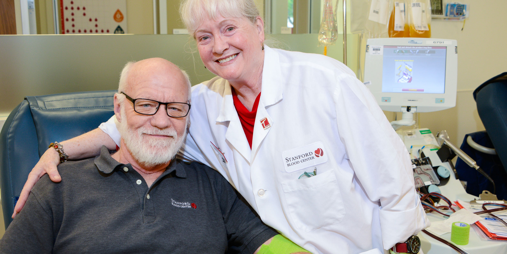

BLOOD
R
Blood Donation
ABOUT STANFORD BLOOD CENTER
OUR VISION
Connecting our communities to provide hope for healing.
OUR MISSION
We lead the fields of transfusion and transplantation medicine by advancing science and technology. We
provide hope for the future by teaching the medical leaders of tomorrow. We enhance lives by connecting donors to patients
every day.
A BRIEF HISTORY
Stanford Blood Center was created within the Department of Pathology at Stanford University School of Medicine in 1978.
The Blood Center was created to meet the increasingly large and complex transfusion needs of Stanford Health Care and
Lucile Salter Packard Children’s Hospital at Stanford, and to perform research and teaching.
As an academic blood center, we were able to match the resources of a world-class university with the operational demands of
a rapidly growing, innovative health care system. Our labs led the field in research and testing services, and our
leadership were responsible for initiating many of the procedures and safeguards of the blood supply that are
considered industry standards today. As transplantation medicine began to evolve, our HLA (Human Leukocyte Antigen) Lab
pioneered numerous transplant monitoring and compatibility methods, and promoted cutting-edge technologies that have made
precision heath care and advanced data gathering possible.
From the beginning, we have been out front on industry challenges by being ready with testing well in advance of a public
health concern. Our mindset has always been one of prevention, preparedness and safety of the blood supply. As
the needs of the transplant and transfusion industries have grown increasingly complex, and as our hospital partners have increased in scale and numbers, we have expanded to meet demand, while maintaining our dedication to the well-being of
the community and patients we serve.
Follow us:
Contact us:
91+ 8761012548
E-mail:
Rishikesh@gmail.com
Office-Address:
Plot no. 18A
Law gate,
Phagwara, Punjab, India
144401
It is private network
Please read all Terms and Conditions before Payment
Link:
www.India_car_rental.com